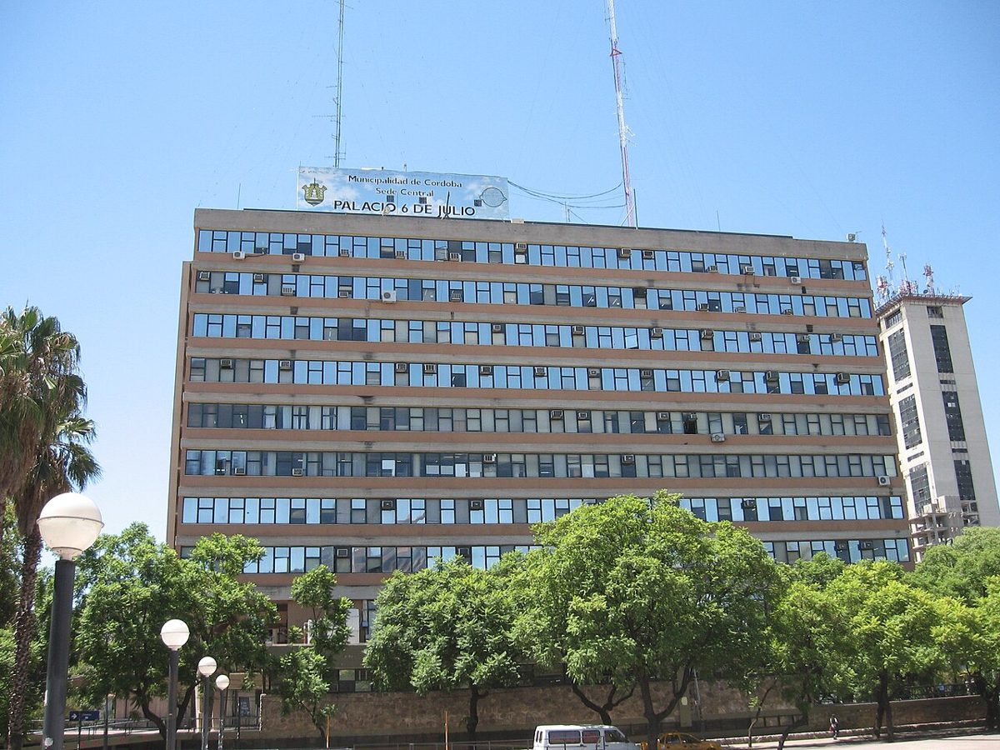

El Palacio 6 de Julio, sede de la Municipalidad de Córdoba, de la que depende el ente Córdoba Obras y Servicios. (Belgrano/Wikimedia Commons)
Córdoba · Política
COyS: un ente que nació con votos de dos partidos, creció sin balances a la vista y hoy está en manos de la Justicia
Lo creó el Concejo en 2015 con la gestión radical y los votos del peronismo; en 2020 se rebautizó y amplió. Hoy su presidente denuncia presuntas horas extras irregulares, aprietes sindicales y presiones del Ejecutivo, que el Municipio niega. Qué está probado, qué no, y qué le toca a cada uno.
23 nov 2026
 Foto: J3D3 / Wikimedia Commons (CC BY-SA 4.0)")
 Gráfico: Equipo GGM Data, con datos del INDEC")
 Foto: Vinnytsia Oblast State Administration / Wikimedia Commons (CC BY 4.0)")
 Gráfico: Equipo GGM Data, con datos de la agencia NA (EMBI J.P. Morgan)")
 Foto: Horacio_Fernandez / Wikimedia Commons (CC BY 3.0)")
 Foto: Ezarate / Wikimedia Commons (CC BY-SA 4.0)")
 Gráfico: Equipo GGM Data, con datos de Banco Nación, Ámbito y Becerra Bursátil")
 Foto: Gobierno de la Ciudad Autónoma de Buenos Aires (CC BY 2.5 AR)")
 Foto: Laura Fiorucci / Wikimedia Commons (CC BY-SA 4.0)")